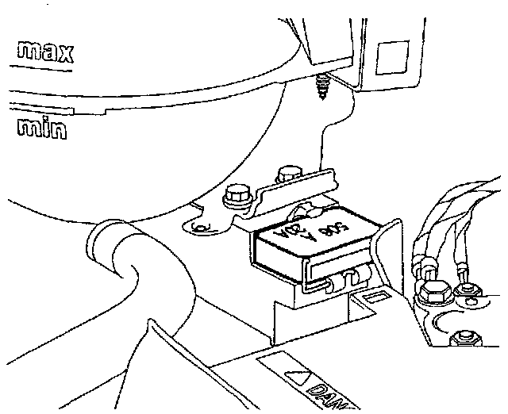
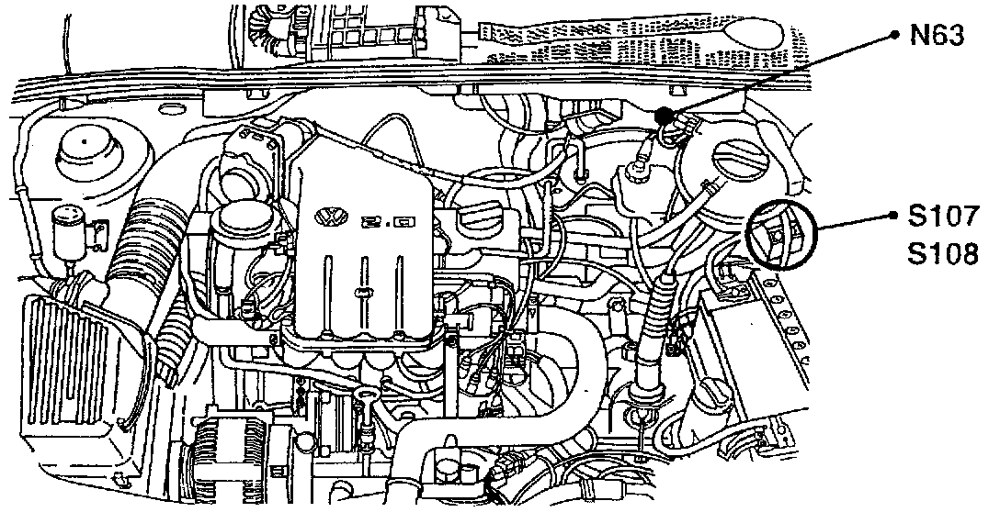

Coolant Fan 1st-Speed and A/C Clutch Fuse
S107, T19:

Component Location View
S107:

Component View
S108 Coolant Fan 1st-speed And A/C Clutch Fuse
- Behind battery, on coolant fan control module J293, under plastic cover
N63, S107, S108:

Component Location View
S107:

Component View
S108 Coolant Fan 1st-speed And A/C Clutch Fuse
- Behind battery, on coolant fan control module J293, under plastic cover
S107, S108, T4:

Component Location View
S107:

Component View
S108 Coolant fan 1st-speed and A/C clutch fuse
- behind battery, on coolant fan control module J293, under plastic cover